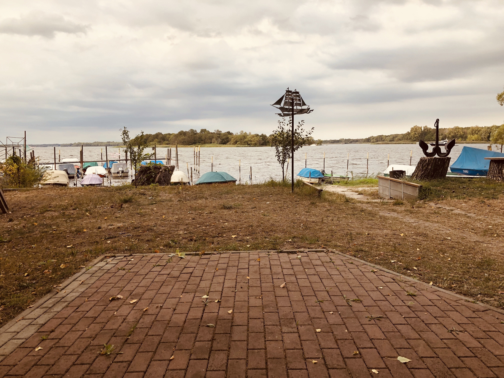

Natur erleben • Angeln genießen • Gemeinschaft am Breitlingsee
Schön, dass Sie unsere Webseite besuchen.
Unser Angelverein liegt direkt am wunderschönen Breitlingsee in Brandenburg an der Havel und bietet Angelfreunden, Bootsbesitzern und Naturfreunden eine angenehme Gemeinschaft inmitten der Natur.
Sie haben Fragen rund um unseren Angelverein? Dann sprechen Sie uns gerne an. Ob Informationen zum Vereinsleben, zu Bootsliegeplätzen oder zur Mitgliedschaft – wir helfen Ihnen gerne weiter.
Neue Mitglieder sind bei uns herzlich willkommen!
Wenn Sie Interesse an unserem Verein haben oder mehr über uns erfahren möchten, freuen wir uns über Ihre Kontaktaufnahme per Telefon oder E-Mail.

Hinweis für Gastangler:
Angelkarten werden nicht direkt durch den Angelverein Gut Biss verkauft.
Angelkarten können unter anderem bequem online erworben werden.
Angelkarten online kaufenSie möchten den Breitlingsee mit einem Boot erkunden?
Informationen zur Bootsvermietung finden Sie bei der Marina Malge.
Zur BootsvermietungSie interessieren sich für unseren Verein, eine Mitgliedschaft oder einen Bootsliegeplatz?
Auch bei anderen Fragen rund um den Angelverein können Sie sich gerne bei uns melden.